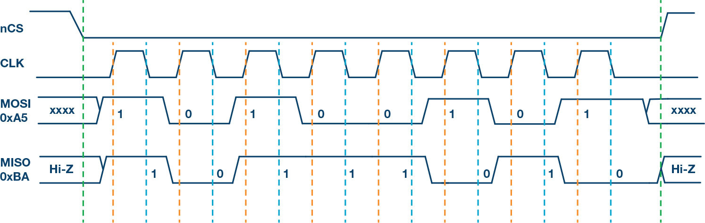
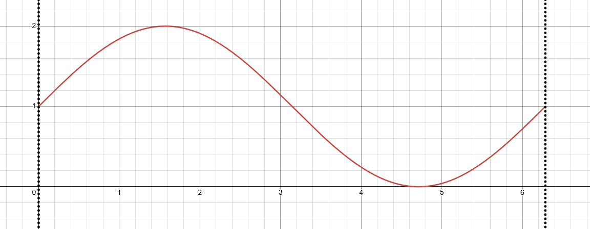
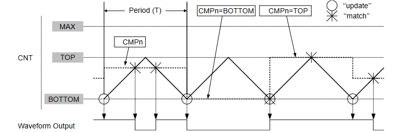
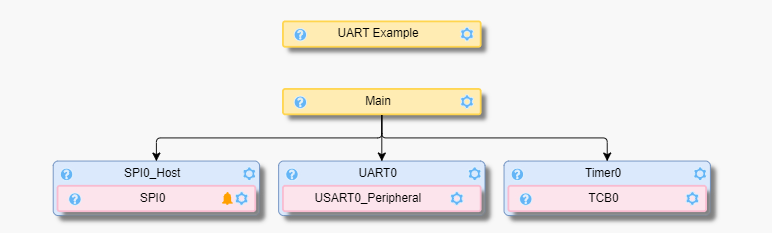
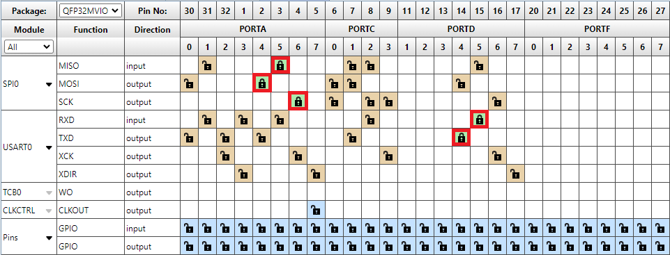
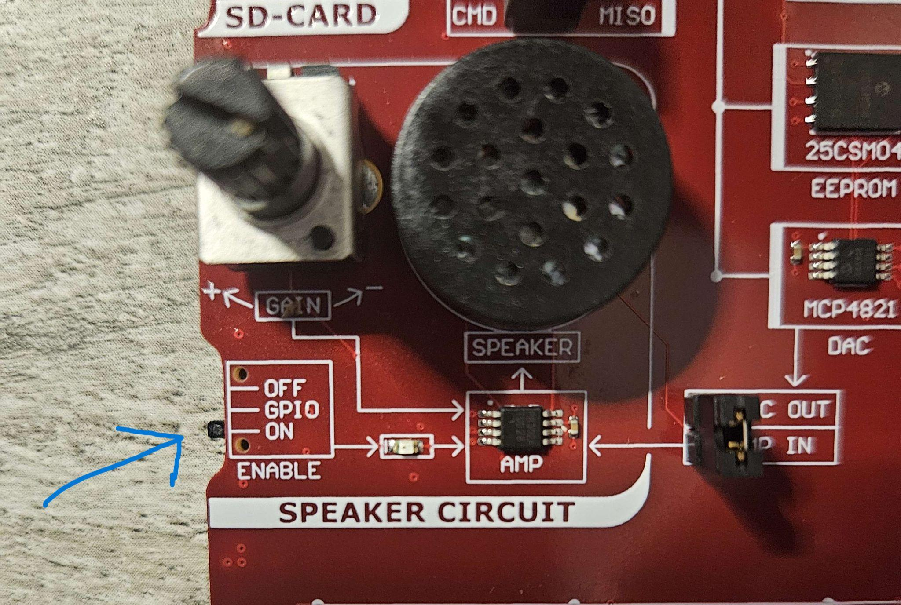
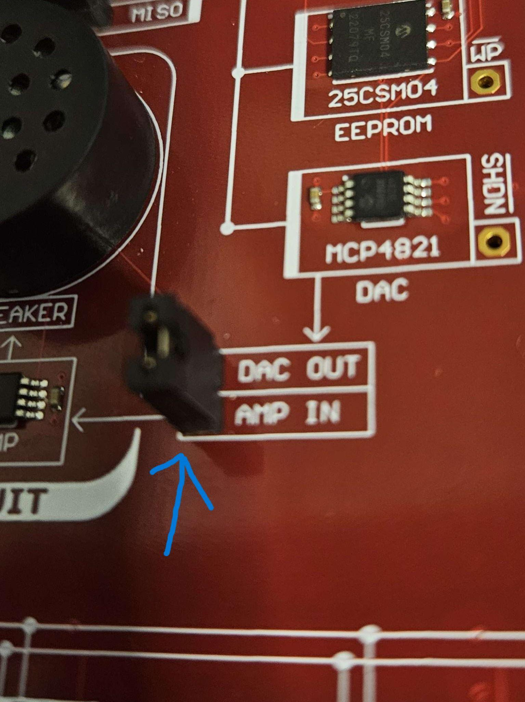

Lab 5: SPI & PWM
Required Materials
This lab requires the following materials
- Computer with MPLAB X IDE installed
- AVR64DD32 Curiosity Nano with EV58G97A Curiosity Explorer
This lab was designed to work with Windows operating systems. For other operating systems, steps may differ from what is listed in this lab manual.
Learning Objectives
By the end of this lab, you should be able to do the following:
- Understand how the Serial Peripheral Interface (SPI) protocol works
- Transmit 16-bit data to the DAC using SPI
- Explain how the amplitude and frequency affect sound
SPI Overview
Serial Peripheral Interface is a bi-directional synchronous protocol composed of four lines:
- Chip Select (CS) – used to select which peripheral to send data to.
- Peripheral-In Controller-Out (PICO) - used to send data from the peripheral to the controller (board)
- Serial Clock (SCK) - used to synchronize data transfer between controller and peripheral.
The SPI protocol is simple to understand, following these basic steps:
- At initialization, set the serial clock low and all the chip select lines of the peripherals involved high.
- To start communication with a peripheral, set the corresponding chip select of the peripheral low.
- To send data, write the data using Big-Endian (most significant bit first) to COPI, afterwards set the clock high then low.
- To receive data, set the clock high then write the data using Big-Endian to PICO, afterwards set the clock low.
- After all data is transmitted/received, set the chip select line high to unselect the peripheral
It is important to notice that the data is written on the rising edge of the clock and received on the falling edge of the clock. This is determined by the clock phase (CPHA) where 0 indicates a data transfer on the rising edge and 1 indicates a data transfer on the falling edge. Clock phase is commonly paired with clock polarity (CPOL) which determines the state of the clock when it is idle. We will be using SPI Mode 0 in this lab (data written on rising edge and clock defaults to low).
 SPI Mode 0, Image from Embedded Computing
SPI is notably faster than I2C and is only limited by the device’s limiting frequency or acceptable timing established by the device. However, SPI requires at least 4 GPIO pins with an additional pin for every peripheral added. In this lab, the SPI protocol is abstracted as the SPI0 interface, so we will not need to deal with the timing of the data transfer.
Speaker Circuit
We will be using SPI to send data to the Digital-to-Analog Converter (MCP4821), which is connected to the onboard speaker system. The DAC converts the incoming digital signal to an approximate analog signal according to its internal voltage (2.048V). The DAC sends the voltage signal to the speaker, which in turn drives the amplitude (or loudness) of the speaker. In order to generate sound, we also need to set the frequency (rate at which the voltage changes).
To generate an artificial frequency, we will mathematically generate values to mimic a sinusoidal wave. Since the DAC is 12 bits, the possible values range from 0 to 4095. To model these possible range of values using a sine function, our expression will look like this:
\[f(x) = \left\lfloor 2047.5 \cdot \sin(x) + 2047.5 \right\rfloor \quad \text{where } x \in [0, 2\pi]\]
 Amplitude adjusted to 1 for visibility, floor not modeled
The “⌊” and “⌋” symbols (floor) means that we remove the decimals off of the final number. To generate values for x between 0 and 2𝜋, we can divide the total range of x (2𝜋 - 0 = 2𝜋) by the number of evenly spaced values we want (200 steps in this case) to get a 2𝜋200=𝜋100 step size. When we increase the number of steps, we increase the time it takes for the sound to play out – which in turn decreases the frequency of the resulting sound and vice versa.
PWM
You might have noticed that manually calculating the sine wave values is tedious and that we have little control over the actual pitch of the resulting sound. To solve both issues, we can use Pulse-Width Modulation (PWM) to directly write the period or frequency. PWM has two main properties: duty cycle and frequency. Duty cycle controls the percentage of the waveform’s period that is written high (100% voltage). Frequency controls the speed at which the period is completed, essentially how fast the waveform oscillates.
On the AVR64DD32, we need to use a Timer Counter to generate an inverse oscillating sawtooth wave. We will be using Timer Counter A (TCA) Dual Slope Mode (see datasheet, page 229) to write both the frequency and the duty cycle.

The duty cycle is controlled by the CMPn register (Compare N Register) where all timer values above the value in the compare register result in a zero voltage output. The Compare N Registers are 16 bits, meaning that we can control the duty cycle by writing 216 times the percentage we want to write.
We cannot control the frequency directly, but we can calculate the period using the following formula:
\[\text{PER} = \dfrac{F_{\text{CLK}}}{2N \cdot f}\]
where \(F_{\text{CLK}}\) is the clocking frequency of the timer (4 MHz), N is the prescaler, and f is the target frequency. A prescaler is used to generate a slower frequency from a faster frequency by grouping multiple periods of a faster frequency into a single period of a slower frequency. For example, a prescaler of 2 means that the PWM would be running twice as slow as the base frequency (4 MHz). To achieve a frequency of 440 Hz with a prescaler of 4, the equation would look like this:
\[\text{PER} = \dfrac{4,000,000}{2 \cdot 4 \cdot 440} = 1,136.36\]
Thus, we would need to write a period of 1136.36 to achieve a frequency of 440 Hz (A4).
Lab Setup
- Open MPLAB X IDE, then go to File 🠂 New Project. Select Application Project(s) for Projects. Change the device to AVR64DD32 and change the tool to the Curiosity Explorer. Select the latest version of XC8 compiler. Type “lab5_spi” for the Project Name and click Finish to create the project.
- On the MPLAB X IDE Toolbar, click the MCC icon to open the Code Configurator. Using the
Device Resources tab, add the following resources:
- Timer – select TCB0, leave everything else as default
- SPI_Host0 – change the requested speed to 3000 kHz, change the mode to Mode 0
- UART – select USART0, then change the requested baud rate to 115200
- UART Example – select UART Write String and set it to Polled

- In the Pin View Grid, lock PORT A pin 4 for SPI0 MOSI, lock PORT A pin 5 for MISO, lock PORT A
pin 6 for SPI0 SCK. The SPI0 pins may already be set. lock PORT D pin 5 for USART0 RXD and lock
PORT D pin 4 for USART0 TXD.

- In the Project Resources tab, click Generate to create the project files.
SPI Speaker Example
Prior to explaining the code, there are two things that we will need to set up. Firstly, the on board speaker needs to be enabled via the switch along the left side.

Additionally, ensure that the DAC OUT/AMP IN pins have a cap on them, as this is critical to getting the data to the speaker.

Second, there are 4 extra files used to alter the waveform of the audio that will be playing, with variable declarations (in separate header files) that will be defined here (these can also be found in Lab5/Code):
Sine.h
int16_t sine_wave[199] = {
0, 64, 129, 194, 259, 323, 387, 450, 514, 576,
638, 700, 760, 820, 879, 937, 995, 1051, 1106, 1160,
1213, 1265, 1315, 1364, 1412, 1458, 1503, 1547, 1588, 1628,
1667, 1704, 1739, 1772, 1804, 1834, 1862, 1888, 1912, 1934,
1954, 1972, 1989, 2003, 2015, 2026, 2034, 2040, 2044, 2046,
2046, 2044, 2040, 2034, 2026, 2015, 2003, 1989, 1972, 1954,
1934, 1912, 1888, 1862, 1834, 1804, 1772, 1739, 1704, 1667,
1628, 1588, 1547, 1503, 1458, 1412, 1364, 1315, 1265, 1213,
1160, 1106, 1051, 995, 937, 879, 820, 760, 700, 638,
576, 514, 450, 387, 323, 259, 194, 129, 64, 0,
-64, -129, -194, -259, -323, -387, -450, -514, -576, -638,
-700, -760, -820, -879, -937, -995,-1051,-1106,-1160,-1213,
-1265,-1315,-1364,-1412,-1458,-1503,-1547,-1588,-1628,-1667,
-1704,-1739,-1772,-1804,-1834,-1862,-1888,-1912,-1934,-1954,
-1972,-1989,-2003,-2015,-2026,-2034,-2040,-2044,-2046,-2046,
-2044,-2040,-2034,-2026,-2015,-2003,-1989,-1972,-1954,-1934,
-1912,-1888,-1862,-1834,-1804,-1772,-1739,-1704,-1667,-1628,
-1588,-1547,-1503,-1458,-1412,-1364,-1315,-1265,-1213,-1160,
-1106,-1051, -995, -937, -879, -820, -760, -700, -638, -576,
-514, -450, -387, -323, -259, -194, -129, -64, 0
};
Sawtooth.h
int16_t sawtooth_wave[199] = {
0, 20, 41, 62, 82, 103, 124, 144, 165, 186,
206, 227, 248, 268, 289, 310, 330, 351, 372, 392,
413, 434, 454, 475, 496, 516, 537, 558, 578, 599,
620, 640, 661, 682, 703, 723, 744, 765, 785, 806,
827, 847, 868, 889, 909, 930, 951, 971, 992, 1013,
1033, 1054, 1075, 1095, 1116, 1137, 1157, 1178, 1199, 1219,
1240, 1261, 1281, 1302, 1323, 1343, 1364, 1385, 1406, 1426,
1447, 1468, 1488, 1509, 1530, 1550, 1571, 1592, 1612, 1633,
1654, 1674, 1695, 1716, 1736, 1757, 1778, 1798, 1819, 1840,
1860, 1881, 1902, 1922, 1943, 1964, 1984, 2005, 2026, -2047,
-2026, -2005, -1984, -1964, -1943, -1922, -1902, -1881, -1860, -1840,
-1819, -1798, -1778, -1757, -1736, -1716, -1695, -1674, -1654, -1633,
-1612, -1592, -1571, -1550, -1530, -1509, -1488, -1468, -1447, -1426,
-1406, -1385, -1364, -1343, -1323, -1302, -1281, -1261, -1240, -1219,
-1199, -1178, -1157, -1137, -1116, -1095, -1075, -1054, -1033, -1013,
-992, -971, -951, -930, -909, -889, -868, -847, -827, -806,
-785, -765, -744, -723, -703, -682, -661, -640, -620, -599,
-578, -558, -537, -516, -496, -475, -454, -434, -413, -392,
-372, -351, -330, -310, -289, -268, -248, -227, -206, -186,
-165, -144, -124, -103, -82, -62, -41, -20, 0
};
Square.h
int16_t square_wave[199] = {
-2047, -2047, -2047, -2047, -2047, -2047, -2047, -2047, -2047, -2047,
-2047, -2047, -2047, -2047, -2047, -2047, -2047, -2047, -2047, -2047,
-2047, -2047, -2047, -2047, -2047, -2047, -2047, -2047, -2047, -2047,
-2047, -2047, -2047, -2047, -2047, -2047, -2047, -2047, -2047, -2047,
-2047, -2047, -2047, -2047, -2047, -2047, -2047, -2047, -2047, -2047,
-2047, -2047, -2047, -2047, -2047, -2047, -2047, -2047, -2047, -2047,
-2047, -2047, -2047, -2047, -2047, -2047, -2047, -2047, -2047, -2047,
-2047, -2047, -2047, -2047, -2047, -2047, -2047, -2047, -2047, -2047,
-2047, -2047, -2047, -2047, -2047, -2047, -2047, -2047, -2047, -2047,
-2047, -2047, -2047, -2047, -2047, -2047, -2047, -2047, -2047, -2047,
2047, 2047, 2047, 2047, 2047, 2047, 2047, 2047, 2047, 2047,
2047, 2047, 2047, 2047, 2047, 2047, 2047, 2047, 2047, 2047,
2047, 2047, 2047, 2047, 2047, 2047, 2047, 2047, 2047, 2047,
2047, 2047, 2047, 2047, 2047, 2047, 2047, 2047, 2047, 2047,
2047, 2047, 2047, 2047, 2047, 2047, 2047, 2047, 2047, 2047,
2047, 2047, 2047, 2047, 2047, 2047, 2047, 2047, 2047, 2047,
2047, 2047, 2047, 2047, 2047, 2047, 2047, 2047, 2047, 2047,
2047, 2047, 2047, 2047, 2047, 2047, 2047, 2047, 2047, 2047,
2047, 2047, 2047, 2047, 2047, 2047, 2047, 2047, 2047
};
Triangle.h
int16_t triangle_wave[199] = {
0, 64, 129, 194, 259, 324, 389, 454, 519, 584,
649, 714, 779, 844, 909, 974, 1039, 1104, 1169, 1234,
1299, 1364, 1429, 1494, 1558, 1623, 1688, 1753, 1818, 1883,
1948, 2013, 2078, 2143, 2208, 2273, 2338, 2403, 2468, 2533,
2598, 2663, 2728, 2793, 2858, 2923, 2988, 3053, 3117, 3182,
3182, 3117, 3053, 2988, 2923, 2858, 2793, 2728, 2663, 2598,
2533, 2468, 2403, 2338, 2273, 2208, 2143, 2078, 2013, 1948,
1883, 1818, 1753, 1688, 1623, 1558, 1494, 1429, 1364, 1299,
1234, 1169, 1104, 1039, 974, 909, 844, 779, 714, 649,
584, 519, 454, 389, 324, 259, 194, 129, 64, 0,
-64, -129, -194, -259, -324, -389, -454, -519, -584, -649,
-714, -779, -844, -909, -974, -1039, -1104, -1169, -1234, -1299,
-1364, -1429, -1494, -1558, -1623, -1688, -1753, -1818, -1883, -1948,
-2013, -2078, -2143, -2208, -2273, -2338, -2403, -2468, -2533, -2598,
-2663, -2728, -2793, -2858, -2923, -2988, -3053, -3117, -3182, -3182,
-3117, -3053, -2988, -2923, -2858, -2793, -2728, -2663, -2598, -2533,
-2468, -2403, -2338, -2273, -2208, -2143, -2078, -2013, -1948, -1883,
-1818, -1753, -1688, -1623, -1558, -1494, -1429, -1364, -1299, -1234,
-1169, -1104, -1039, -974, -909, -844, -779, -714, -649, -584,
-519, -454, -389, -324, -259, -194, -129, -64, 0
};
These will be imported and used by the program.
-
To begin main.c, add the following imports. This includes the familiar systimer and system header
files, string and stdio headers, as well as our four new files for the waveform.
#include "mcc_generated_files/system/system.h" #include <string.h> #include <stdio.h> #include "systimer.h" #include "sine.h" #include "square.h" #include "triangle.h" #include "sawtooth.h" -
In order to communicate to the speaker, a macro will be added for communicating to the DAC_CS pin.
// MCP4821 12 bit DAC / SPI interface // chip select IO26 Explorer #define DAC_CS (1 << 2) -
The following macro should also be added for the on board LED, to signify when we are swapping
between waveforms.
// AVR64DD32 C-Nano board LED on PORTF bit 5 #define CNANO_LED (1 << 5) -
Next, add function declarations for initializing the DAC and playing a tone on the speaker,
as well as the familiar UART_WriteString.
void UART_WriteString(const char *message); void dac_init(void); void play_tone(void); -
Declare inline functions for turning the on board LED on and off.
static inline void board_led_on(void) { do PORTF.OUTCLR = CNANO_LED; while(0);} static inline void board_led_off(void) { do PORTF.OUTSET = CNANO_LED; while(0);} -
For initializing our DAC unit, we need to specify the DIRSET and OUTSET properties for PORTC,
as well as open our SPI connection using our HOST_CONFIG.
void dac_init() { // configure the chip select PORTC.DIRSET = DAC_CS; PORTC.OUTSET = DAC_CS; SPI0_Open(HOST_CONFIG); } -
Next create an enum to cycle through for the four types of waveforms that will be demonstrated.
enum WaveformType { SAWTOOTH, SQUARE, TRIANGLE, SINE }; -
In addition to sampling different waveforms, add an array to hold 4 different notes to be played,
also an index to keep track of which note we are playing.
int8_t notes[4] = {2, 3, 5, 3}; int8_t index = 0; -
For the play_tone method, first declare the necessary variables for keeping track of the current
waveform, the note being played, and the data to write to the DAC to play said tone. Note, since this
method will be called in the looping portion of our program, we will declare these as static.
void play_tone(void) { static enum WaveformType current_wave = SAWTOOTH; static volatile int array_index, sample; static volatile uint8_t high_byte,low_byte; int16_t* wave_ptr; // For pointing to current wave data -
Include a switch case to update the wave_ptr variable based on our current_wave.
void play_tone(void) { . . . switch(current_wave) { case SAWTOOTH: wave_ptr = sawtooth_wave; break; case SQUARE: wave_ptr = square_wave; break; case TRIANGLE: wave_ptr = triangle_wave; break; case SINE: wave_ptr = sine_wave; break; } -
When starting to play the tone, swap on the on board LED and reset timer1, as well as
update the current_wave variable.
clear_timer1(); board_led_on(); // Cycle through wave types 0 to 3, wrap back to 0 after 3 current_wave = (current_wave + 1) % 4; -
For actually playing the tone, create a while loop with the condition that timer1 remains under
200ms (or any duration you’d like), to allow each waveform to play. Inside the loop, create another
loop that goes from 0 to 199, with the index scaling based on the notes variable we created earlier.
Note, the loop will iterate between notes and wave forms between iterations of play_tone. Inside
our inner loop, a value from wave_ptr should be accessed at the current array_index, and an offset
of 2048 should be added in order for the waveforms to properly function through the DAC. This is to
zero the values around 2048, which is half of the possible values that can be made with the DAC as
it is 12-bits, as mentioned in the speaker circuit section. Next, write the sample value to the
higher and lower bytes of the previously declared variable, set the DAC_CS pin low, write the
values over SPI using SPI_ByteExchange (high byte first)
and set the DAC_CS high to send the value.
while(read_timer1() < 200ul) // 200ms delay { for(array_index = 0;array_index < 199;array_index += notes[index]) { // add DC offset (2048) sample = wave_ptr[array_index] + 2048; // high byte (lower four bits) = top 4 bits of the 12-bit high_byte = (uint8_t)(sample >> 8); // high byte (higher four bits) = 0011 from 0x30 -> // Gain bit = 1x and active bit = 1 high_byte |= 0x30; // low byte (all 8 bits) = lower 8-bits of the 12-bit sample low_byte = (uint8_t)(sample & 0xFF); // sets the DAC_CS pin to low PORTC.OUTCLR = DAC_CS; // send high byte information over SPI SPI0_ByteExchange(high_byte); // send low byte information over SPI SPI0_ByteExchange(low_byte); // sets the DAC_CS pin to high PORTC.OUTSET = DAC_CS; } } -
Finally, after the while loop, shut the on board LED off and iterate the index up by 1,
unless it is already at 3 in which case reset it to 0.
board_led_off(); if (index == 3) index = 0; else index++;
PWM Speaker Lab
In this section of the lab, we will demonstrate how to directly hook the PWM-A pin (PD1) to the AMP IN pin of the speaker circuit.
- Create a new MPLAB X IDE project named “lab5-pwm” with the default settings (Application Project, AVR64DD32, Board Connection, XC8).
- Open Microchip Code Configurator – Do not add any resources to the project.
- In the Project Resources tab, click the Generate button to build the project’s working files.
- In the Header Files under Projects, create a C Header file called “pwm.h” by right clicking on the Header Files directory and selecting New 🠒 C Header File. In pwm.h, put the following function declarations:
-
Under Source Files, create a new C file called “pwm.c” by right clicking on Source Files and
selecting New 🠒 main.c. Replace the contents of pwm.c with the following code:
#include "mcc_generated_files/system/system.h" #include "pwm.h" #define CLK_PER 4000000UL #define PRESCALER 4 void pwm_init(){ PORTD.DIRSET = PIN1_bm; PORTMUX.TCAROUTEA = PORTMUX_TCA0_PORTD_gc; TCA0.SINGLE.CTRLB = TCA_SINGLE_CMP1EN_bm | TCA_SINGLE_WGMODE_DSBOTTOM_gc; TCA0.SINGLE.CTRLA = TCA_SINGLE_CLKSEL_DIV4_gc | TCA_SINGLE_ENABLE_bm; } void pwm_play_tone(float frequency, float duty_cycle){ float period = (float) CLK_PER / (2.0f * PRESCALER * frequency); TCA0.SINGLE.PERBUF = (unsigned int) (period); TCA0.SINGLE.CMP1BUF = (unsigned int) (period * duty_cycle); }- PORTD.DIRSET = PIN1_bm - Sets the direction of the PD1 pin to output.
- PORTMUX.TCAROUTEA = PORTMUX_TCA0_PORTD_gc - Tells the chip to use PORTD for routing signals from the TCA timer.
- TCA0.SINGLE.CTRLB - Sets the TCA timer into dual-slope mode (control period and duty cycle) and enables the compare 1 register for duty cycle control.
- TCA0.SINGLE.CTRLA - Selects a prescaler of 4 and starts the timer.
- In pwm_play_tone , the period is calculated from the frequency, prescaler, and peripheral clock speed, then written to the period register.
- The duty cycle is written as a given percentage of the period.
-
In the main.c file, add the following code:
#include "mcc_generated_files/system/system.h" #include "pwm.h" int main(void) { SYSTEM_Initialize(); pwm_init(); pwm_play_tone(440.0f, 0.5f); while(1) { } }- In the main file, we include the pwm.h header file and call the initialization PWM function to initialize the TCA timer. Then we play a 440 Hz tone (A4) with a 50% duty cycle.
- Click the Build for Debugging Project button on the toolbar, then click the debug button to run the program.
- Try changing the values for pwm_play_tone and see what happens!
#ifndef PWM_H
#define PWM_H
#ifdef __cplusplus
extern "C" {
#endif
void pwm_init();
void pwm_play_tone(float frequency, float duty_cycle);
#ifdef __cplusplus
}
#endif
#endif /* PWM_H */